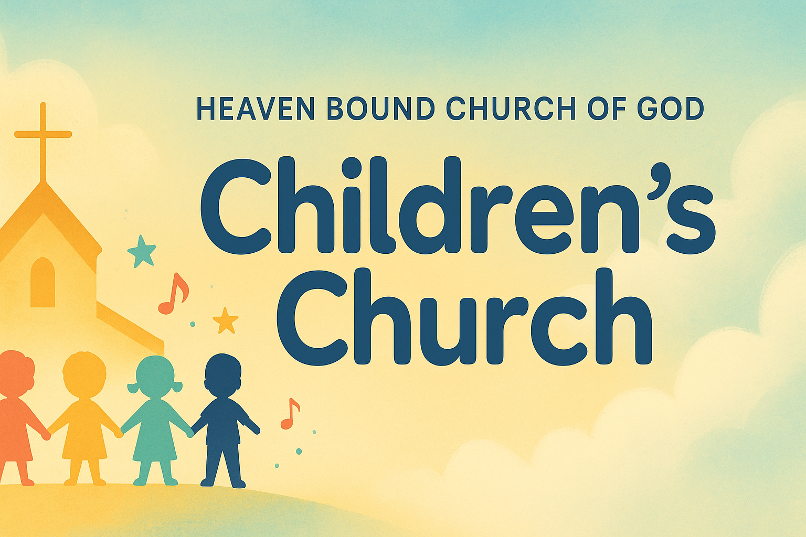

Heaven Bound Church of God — Children’s Church

Ages 3–12 | Every Sunday Morning
- A hot, healthy breakfast is served in the classroom before service by our Children’s Church workers: Sister Beverly Brownsword, Jana Lashley, and Jessica Harper.
- We make sure no child goes hungry.
Breakfast
- After breakfast, our director/teacher Sister Jannette White leads Children’s Church.
- Sister Marie Lashley teaches songs; our kids form the Heaven Bound Church Youth Choir, singing in the main worship service on select Sundays.
Worship & Music
- Weekly Bible lesson with memory verses led by Sister Jannette White.
- Craft time is often included to reinforce the lesson.
Teaching & Activities
- Children learn the power of prayer and have dedicated prayer time each week.
Prayer
- September–December: weekly Christmas play rehearsals during Children’s Church.
Christmas Season
Questions? Visit Heaven Bound Church of God or speak with the Children’s Church team.